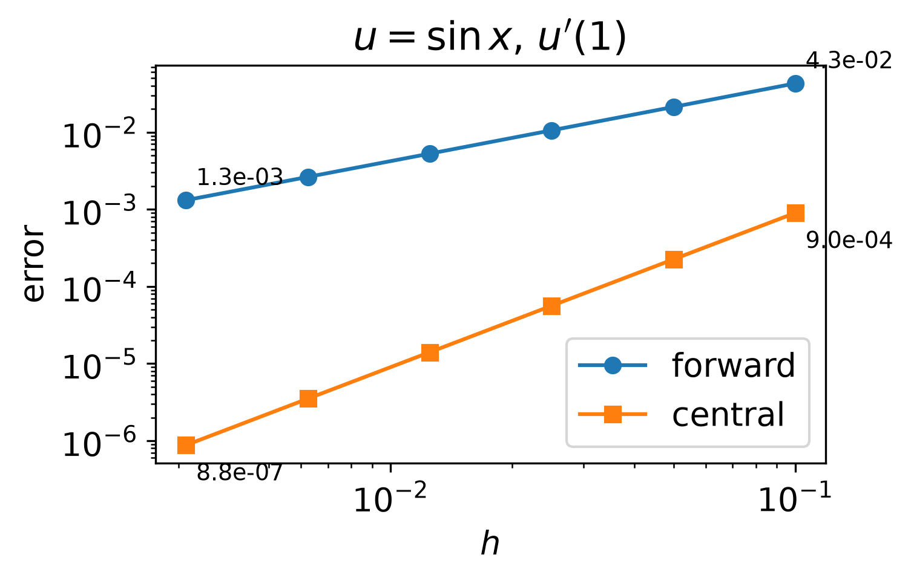
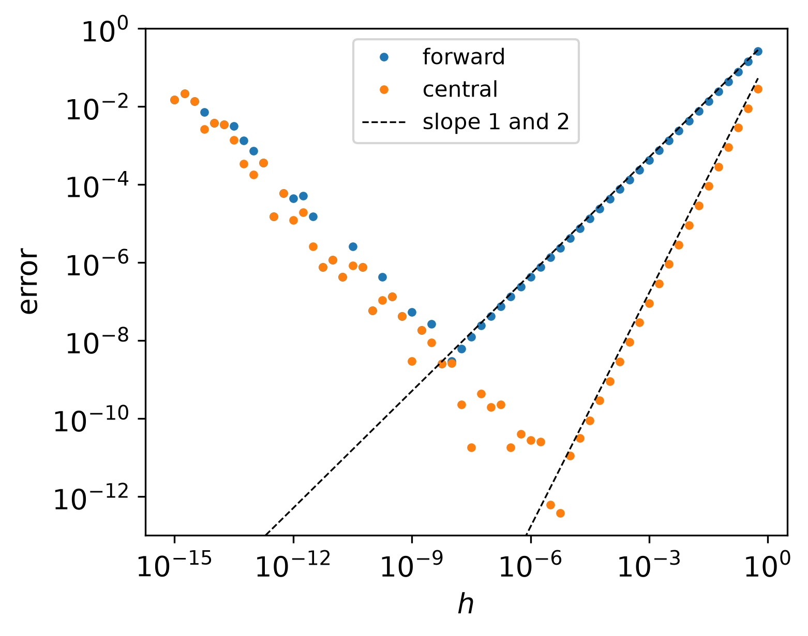
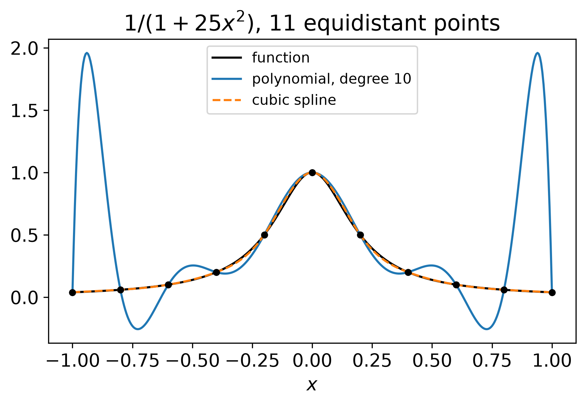
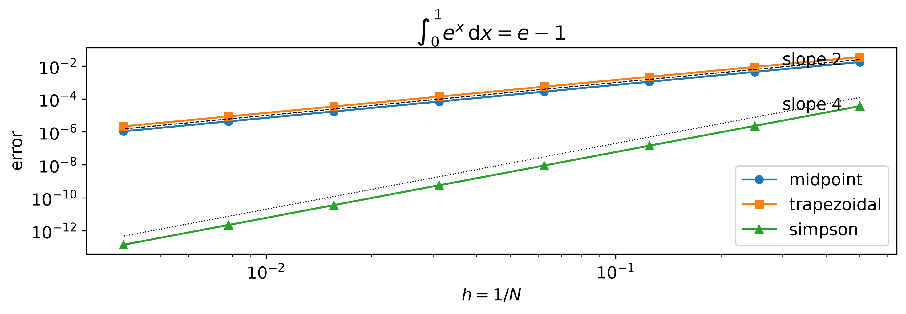
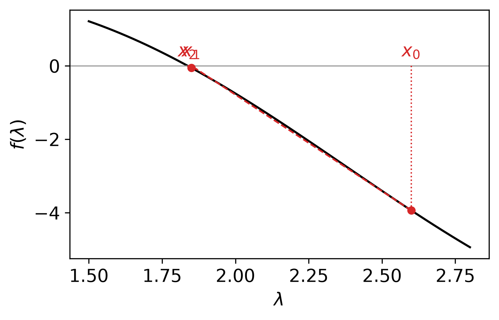

Prognostic Modelling (pea700) · Lecture 3
All tools rest on one idea: the Taylor series. Combine series so that unwanted terms cancel.
\[ u(x + h) = u(x) + h \, u'(x) + \frac{h^2}{2} u''(x) + \frac{h^3}{6} u'''(x) + \frac{h^4}{24} u''''(x) + \dots \]
Replace \(h\) by \(-h\): the odd terms change sign, \((-h)^k = -h^k\) for odd \(k\)
\[ u(x - h) = u(x) - h \, u'(x) + \frac{h^2}{2} u''(x) - \frac{h^3}{6} u'''(x) + \frac{h^4}{24} u''''(x) - \dots \]
Notation: \(e = O(h^p)\) if \(|e| \le C h^p\) for small \(h\), \(C\) independent of \(h\).
A method with error \(O(h^p)\) is of order \(p\): halving \(h\) divides the error by about \(2^p\).
Subtract \(u(x)\), divide by \(h\):
\[ \frac{u(x + h) - u(x)}{h} = u'(x) + \frac{h}{2} u''(x) + \frac{h^2}{6} u'''(x) + \dots \]
Solve for \(u'(x)\): every term moves to the other side with a minus sign
\[ u'(x) = \underbrace{\frac{u(x + h) - u(x)}{h}}_{\text{forward difference}} \; \underbrace{- \, \frac{h}{2} u''(x) - \frac{h^2}{6} u'''(x) - \dots}_{\text{truncation error}} \]
First order. Backward difference \(\frac{u(x) - u(x - h)}{h}\): also first order, leading error \(+\frac{h}{2} u''\), opposite sign.
Think first: opposite signs. What happens if we combine them?
| Term | in \(u(x + h)\) | in \(u(x - h)\) | difference |
|---|---|---|---|
| \(u\) | \(u\) | \(u\) | \(0\) |
| \(u'\) | \(h \, u'\) | \(-h \, u'\) | \(2 h \, u'\) |
| \(u''\) | \(\tfrac{h^2}{2} u''\) | \(\tfrac{h^2}{2} u''\) | \(0\) |
| \(u'''\) | \(\tfrac{h^3}{6} u'''\) | \(-\tfrac{h^3}{6} u'''\) | \(\tfrac{h^3}{3} u'''\) |
Divide by \(2h\), solve for \(u'(x)\):
\[ u'(x) = \frac{u(x + h) - u(x - h)}{2h} - \frac{h^2}{6} u'''(x) - \dots \qquad \text{second order, same cost} \]
Add the two series: the odd terms cancel
\[ u(x + h) + u(x - h) = 2 u(x) + h^2 u''(x) + \frac{h^4}{12} u''''(x) + \dots \]
Subtract \(2u(x)\), divide by \(h^2\), solve for \(u''(x)\):
\[ u''(x) = \frac{u(x + h) - 2 u(x) + u(x - h)}{h^2} - \frac{h^2}{12} u''''(x) - \dots \]
Flux form: difference of two first derivatives at the half points
\[ u''(x) \approx \frac{1}{h} \left[ \underbrace{\frac{u(x + h) - u(x)}{h}}_{u'(x + h/2)} - \underbrace{\frac{u(x) - u(x - h)}{h}}_{u'(x - h/2)} \right] \]
The core of every diffusion model; with variable \(D\) it becomes \(D_{i+1/2}\) and \(D_{i-1/2}\).
\(e(h) \approx C h^p \;\Rightarrow\; \log e = \log C + p \log h\)
Straight line with slope \(p\) on log–log axes.
From two steps, \(C\) drops out:
\[ p = \frac{\log \left( e(h_1) / e(h_2) \right)}{\log \left( h_1 / h_2 \right)} \]
Halving \(h\): \(p = \log_2\) of the error ratio. Factor 4 = second order.

Observed order = theoretical order is the test of a code. A bug almost always lowers the order.
Stored values carry relative errors \(|\delta| \le \varepsilon\):
\[ u(x{+}h)(1{+}\delta_2) - u(x)(1{+}\delta_1) \]
Numerator wrong by up to \(2 \varepsilon |u|\); divided by \(h\):
\[ e(h) = \underbrace{\frac{h}{2} |u''|}_{\text{truncation}} + \underbrace{\frac{2 \varepsilon |u|}{h}}_{\text{round-off}} \]
Think first: where is the minimum?

\[ \frac{\mathrm{d}e}{\mathrm{d}h} = \frac{|u''|}{2} - \frac{2 \varepsilon |u|}{h^2} = 0 \quad \Longrightarrow \quad h_{\text{opt}} = 2 \sqrt{\frac{\varepsilon |u|}{|u''|}}, \qquad e(h_{\text{opt}}) = 2 \sqrt{\varepsilon \, |u| \, |u''|} \]
| \(h_{\text{opt}}\) | smallest error | digits lost | |
|---|---|---|---|
| forward, \(O(h)\) | \(\sim \sqrt{\varepsilon} \approx 10^{-8}\) | \(\sim 10^{-8}\) | half of 16 |
| central, \(O(h^2)\) | \(\sim \varepsilon^{1/3} \approx 10^{-5}\) | \(\sim \varepsilon^{2/3} \approx 10^{-11}\) | about 5 |
Higher order: smaller error at the same step and less sensitive to round-off. In a convergence test, choose \(h\) neither so large that higher terms disturb the slope nor so small that round-off dominates.
First derivative at a boundary, points \(x\), \(x + h\), \(x + 2h\). Factor of each derivative in each Taylor series:
| \(u\) | \(h \, u'\) | \(h^2 u''\) | \(h^3 u'''\) | |
|---|---|---|---|---|
| \(u(x)\) | 1 | 0 | 0 | 0 |
| \(u(x + h)\) | 1 | 1 | \(\tfrac12\) | \(\tfrac16\) |
| \(u(x + 2h)\) | 1 | 2 | 2 | \(\tfrac86\) |
\(w_0 u(x) + w_1 u(x{+}h) + w_2 u(x{+}2h)\) shall contain \(u'\) once, no \(u\), no \(u''\):
\[ w_0 + w_1 + w_2 = 0, \qquad w_1 + 2 w_2 = \tfrac1h, \qquad \tfrac12 w_1 + 2 w_2 = 0 \]
Second minus third: \(\tfrac12 w_1 = \tfrac1h\), so \(w_1 = \tfrac2h\), \(w_2 = -\tfrac{1}{2h}\), \(w_0 = -\tfrac{3}{2h}\).
Leading error from the uncontrolled column: \(\left( \tfrac16 w_1 + \tfrac86 w_2 \right) h^3 u''' = \left( \tfrac{1}{3h} - \tfrac{2}{3h} \right) h^3 u''' = -\tfrac13 h^2 u'''\)
\[ u'(x) = \frac{-3 u(x) + 4 u(x + h) - u(x + 2h)}{2h} + \frac{h^2}{3} u'''(x) + \dots \]
Second order, but error constant \(\tfrac13\): twice that of the central difference.
General: offsets \(s_j\), \(m\)-th derivative, \(n\) points, \(n\) linear equations
\[ \sum_{j=0}^{n-1} s_j^k \, w_j = \begin{cases} m! / h^m, & k = m \\ 0, & k \ne m \end{cases} \qquad k = 0, \dots, n - 1 \]
Five points, \(s = (-2, \dots, 2)\): \(u' \approx \tfrac{1}{12h}(1, -8, 0, 8, -1)\), fourth order.
\[ p(x) = u_j + \frac{u_{j+1} - u_j}{h} (x - x_j), \qquad \text{midpoint: } \tfrac12 (u_j + u_{j+1}) \]
Needed constantly: values between grid points, regridding, departure points of air parcels.
Error of a polynomial of degree \(n\) through \(n + 1\) points:
\[ u(x) - p(x) = \frac{u^{(n+1)}(\xi)}{(n + 1)!} \prod_{j=0}^{n} (x - x_j) \]
\(n = 1\), \(t = x - x_j\): the product \(t(t - h)\) is extreme at \(t = h/2\), value \(-h^2/4\)
\[ |u(x) - p(x)| \le \frac{h^2}{8} \max |u''| \qquad \text{second order, exact without curvature} \]
Think first: more points, higher degree, better fit?
Not on equidistant points: \(\prod (x - x_j)\) is large near the ends, and \(u^{(n+1)}\) can grow faster than \((n+1)!\).
Remedies:
Refine the grid with a method of moderate order.

One subinterval of width \(h\), midpoint \(m\). Expand \(f(m + s)\), integrate from \(-h/2\) to \(h/2\); odd powers of \(s\) integrate to zero:
\[ \int_{-h/2}^{h/2} s^2 \, \mathrm{d}s = \frac{2}{3} \left( \frac{h}{2} \right)^3 = \frac{h^3}{12} \quad \Longrightarrow \quad \int f \, \mathrm{d}x = \underbrace{h \, f(m)}_{\text{midpoint}} + \frac{h^3}{24} f''(m) + O(h^5) \]
End points: \(f(m - \tfrac h2) + f(m + \tfrac h2) = 2 f(m) + \tfrac{h^2}{4} f''(m) + O(h^4)\), so
\[ \underbrace{\frac{h}{2} \left[ f(m - \tfrac h2) + f(m + \tfrac h2) \right]}_{\text{trapezoidal}} = h f(m) + \frac{h^3}{8} f'' = \int f \, \mathrm{d}x \underbrace{- \frac{h^3}{24} f'' + \frac{h^3}{8} f''}_{+ \frac{h^3}{12} f''} \]
Solved for the integral: \(\int f \, \mathrm{d}x = \text{trapezoidal} - \frac{h^3}{12} f''(m) + O(h^5)\).
Twice the midpoint error, opposite sign.
\(N = (b - a)/h\) subintervals: local \(O(h^3)\) adds up to \(O(h^2)\)
\[ \text{midpoint: } \frac{h^2}{24} \big[ f'(b) - f'(a) \big], \qquad \text{trapezoidal: } -\frac{h^2}{12} \big[ f'(b) - f'(a) \big] \]
Periodic \(f\) over one period: \(f'(b) = f'(a)\), the trapezoidal rule is extremely accurate.
Simpson: \(\tfrac23\) midpoint \(+ \tfrac13\) trapezoidal, the \(h^3\) terms cancel: \(-\tfrac{2}{3} \cdot \tfrac{1}{24} + \tfrac13 \cdot \tfrac1{12} = 0\)
\[ \int_{m - h/2}^{m + h/2} f \, \mathrm{d}x \approx \frac{h}{6} \left[ f(m - \tfrac h2) + 4 f(m) + f(m + \tfrac h2) \right] \qquad \text{fourth order} \]

In models: every time stepping scheme is a quadrature rule for \(\int_t^{t + \Delta t} f \, \mathrm{d}t\) (left rectangle = forward Euler); finite volumes integrate fluxes over faces; finite elements use Gauss quadrature.
Nonlinear equations everywhere: implicit steps, saturation temperature, water table. Example (eigenvalues of diffusion with Robin conditions):
\[ \tan \lambda + 2 \lambda = 0 \]
Think first: what goes wrong for a root finder?
\(\tan\) jumps from \(+\infty\) to \(-\infty\) at \(\pi/2\): a sign change without a root. Multiply by \(\cos \lambda\):
\[ f(\lambda) = \sin \lambda + 2 \lambda \cos \lambda = 0, \qquad f'(\lambda) = 3 \cos \lambda - 2 \lambda \sin \lambda \]
Same roots: where \(\cos \lambda = 0\), \(f = \sin \lambda = \pm 1 \ne 0\). First root in \([\pi/2, \pi]\): \(f(\pi/2) = 1 > 0\), \(f(\pi) = -2\pi < 0\).
Sign change on \([a, b]\) \(\Rightarrow\) root inside. Halve, keep the half with the sign change.
\[ e_k \le \frac{b - a}{2^{k+1}} \qquad \Longrightarrow \qquad k \ge \log_2 \frac{b - a}{\tau} - 1 \]
\(b - a = \pi/2\), \(\tau = 10^{-12}\): 40 iterations. One binary digit per iteration, 3.3 per decimal digit.
Linear convergence: the error bound shrinks by a fixed factor, \(\tfrac12\).
Keep two Taylor terms (the tangent) and set to zero:
\[ f(x_k + \delta) \approx f(x_k) + \delta \, f'(x_k) = 0 \]
\[ x_{k+1} = x_k - \frac{f(x_k)}{f'(x_k)} \]

Error \(e_k = x_k - r\), so the step from \(x_k\) to the root is \(r - x_k = -e_k\). Taylor at \(x_k\), evaluated at \(r\):
\[ 0 = f(r) = f(x_k) - e_k \, f'(x_k) + \frac{e_k^2}{2} f''(\xi) \]
Divide by \(f'(x_k)\) and move \(-e_k\) and \(f/f'\) to the left (both change sign):
\[ e_k - \frac{f(x_k)}{f'(x_k)} = \frac{f''(\xi)}{2 f'(x_k)} \, e_k^2 \]
Left side: \(x_k - r - \frac{f(x_k)}{f'(x_k)} = x_{k+1} - r = e_{k+1}\). Hence
\[ \boxed{e_{k+1} \approx \frac{f''(r)}{2 f'(r)} \, e_k^2} \]
Error \(10^{-3} \to 10^{-6} \to 10^{-12}\): correct digits double per iteration.
scipy.optimize.root_scalar, brentq)\(\vec F(\vec x) = 0\), \(N\) equations. First-order Taylor with the Jacobian \(J_{ij} = \partial F_i / \partial x_j\):
\[ \vec F(\vec x_k + \delta \vec x) \approx \vec F(\vec x_k) + J(\vec x_k) \, \delta \vec x = 0 \qquad \Longrightarrow \qquad J(\vec x_k) \, \delta \vec x = - \vec F(\vec x_k) \]
Circle and hyperbola, start \((2, 0.5)\):
\[ \vec F = \begin{pmatrix} x^2 + y^2 - 4 \\ x y - 1 \end{pmatrix}, \qquad J = \begin{pmatrix} 2x & 2y \\ y & x \end{pmatrix} \]
error in x: 1.5e-03 1.1e-06 8.0e-13 2.2e-16A nonlinear problem becomes a sequence of linear systems: how the Richards equation is solved. Next lecture: linear algebra.
toolbox.py: difference formulas, quadrature rules, bisection, NewtonPrognostic Modelling (pea700) · WiSe 2026/27